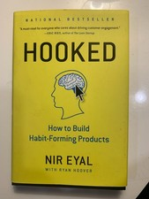

Library › Business & Startups
Hooked — Summary & Key Lessons

How to build habit-forming products — the four-step Hook Model behind the apps you can't stop opening.
📖 OPEN THE FULL INTERACTIVE BREAKDOWN →🌐 Read it in Hindi, Hinglish, Gujarati, Tamil & 22 more languages — free, with audio.
💡 The Big Idea
Why do some products command daily, unprompted use while better-funded rivals are forgotten? Eyal's answer is the Hook Model — a four-phase loop that converts occasional users into habituated ones: an external trigger starts the cycle; a dead-simple action is performed in anticipation of reward; the reward arrives VARIABLY (slot-machine psychology — the unpredictability is the addiction); and the user then INVESTS something (data, content, followers, effort) that loads the next trigger and makes the product better with use. Cycled enough, internal triggers take over: the product becomes the automatic response to an emotion — boredom opens Instagram, loneliness opens WhatsApp, uncertainty opens Google. It's a manual for builders — with a morality test included — and armor for users who'd rather not be the slot machine's patron.
🧠 The 5 Key Lessons
Lesson 1: The Habit Zone: Frequency Times Utility
Chapter 1: The Habit Zone
Habits are behaviors done with little or no conscious thought — and for companies, they're the deepest moat: habits increase lifetime value, allow pricing flexibility (habituated users are price-insensitive — see gamers and coffee drinkers), supercharge growth (daily users evangelize and create network effects), and blunt competition (a better product usually loses to an ingrained one — QWERTY outlived provably faster keyboard layouts by a century of finger-habit). Entry requires the HABIT ZONE: the behavior must occur frequently enough (roughly weekly or more) and carry enough perceived utility. Infrequent-use products (insurance, tax software) can thrive — but they run on marketing, not habit. The strategic question for any builder: is this a vitamin (nice-to-have, pleasure-driven) or a painkiller (need, itch-scratching)? Habit-forming products pull the trick of starting as vitamins and becoming painkillers — the 'pain' they treat is the itch of their own absence.
📖 Example: Eyal's QWERTY case anchors the chapter: the layout was designed to SLOW typists (preventing typewriter jams); superior alternatives like Dvorak demonstrably improved speed — and died, because millions of fingers had automated the inferior map. Switching… Read the full example →
⚡ Do this: Place your product (or the one consuming your life) in the matrix: how often is it used, and is it a vitamin or painkiller? Builders: if usage is naturally infrequent, stop chasing habit mechanics — you need marketing. Users: name the 'pain' your top app treats, and ask who created that pain.
Lesson 2: Triggers: From External Prompts to Internal Itches
Chapter 2: Trigger
Every habit begins with a trigger. EXTERNAL triggers carry information in the environment: paid (ads — expensive, unsustainable for habit-building), earned (press, viral moments — spiky), relationship (one person telling another — the most potent), and owned (icons on the home screen, notifications, newsletters — the persistent drumbeat that keeps users cycling until a habit forms). But the endgame is INTERNAL triggers: emotions and situations that fire the behavior with no prompt at all — and negative emotions are the heavyweights: boredom, loneliness, frustration, uncertainty, FOMO. When a product couples itself to an emotion through repeated relief, the user's own psyche becomes the notification system. Builders find them by asking 'why?' five times until an emotion surfaces; the design brief is then explicit: what itch does the user feel right before using us, and how do we become its automatic scratch?
📖 Example: Eyal's Instagram anatomy: the external triggers did the early lifting (icons, tags, friend invites), but the durable hook is emotional — the fear of losing a moment (FOMO's photographic strain) fires the camera-app reflex, and boredom's micro-twinge fires… Read the full example →
⚡ Do this: Builders: run five-whys on your user until you hit the emotion; write the internal-trigger sentence ('Every time the user feels X, they open us'). Users: for one day, note the FEELING that precedes each unprompted phone-grab — you're reverse-engineering your own trigger map.
Lesson 3: Action: Make It Easier Than Thinking
Chapter 3: Action
The trigger fires; now the behavior must happen — and Fogg's formula governs it: B = MAT (Behavior requires Motivation, Ability, and Trigger converging). Builders chronically over-invest in motivation (persuasion, copy, rewards) when ABILITY is the cheaper lever: make the action so simple that even weak motivation suffices. Fogg's six simplicity factors — time, money, physical effort, brain cycles, social deviance, non-routineness — are a friction audit: whichever is scarcest for your user at trigger-moment is the constraint to attack. The history of consumer tech is a history of removed steps: every simplification wave (one click, one scroll, one tap) opened the behavior to millions more cycles. Heuristics stack on top — scarcity, framing, anchoring, endowed progress — bending perceived value without changing the product at all.
📖 Example: Eyal's simplification tour: Twitter's genius was the 140-character LIMIT (composing a blog post takes minutes of brain cycles; a tweet takes seconds — the constraint WAS the usability); Instagram collapsed photography's time/skill cost into a filter-tap;… Read the full example →
⚡ Do this: Map your product's (or habit's) action path step by step and delete one: one field, one tap, one decision. For personal habits, apply B=MAT in reverse — to break a habit, add friction (log out, bury the icon, remove the app); to build one, make the first action under 30 seconds.
Lesson 4: Variable Reward: The Slot Machine in Everything
Chapter 4: Variable Reward
Predictable rewards create loyalty; VARIABLE rewards create cravings — the dopamine system spikes hardest under uncertainty of outcome (Skinner's pigeons pecked frantically on random schedules and casually on fixed ones). Eyal's taxonomy: rewards of the TRIBE (variable social validation — likes, comments, upvotes, replies: the who-and-how-much is the lottery), rewards of the HUNT (variable material/informational bounty — the infinite scroll is a slot machine where the next swipe might deliver the perfect post; the deal-hunt, the news refresh), and rewards of the SELF (variable mastery and completion — the inbox approaching zero, the level almost beaten, the puzzle nearly solved; no audience required). Critical design caveats: the reward must scratch the ORIGINAL itch (misaligned rewards feel manipulative), and autonomy must be preserved — users who feel controlled rebel ('reactance'); the craving works only when the user feels they chose it.
📖 Example: Eyal's exhibits by category — Tribe: Facebook's like counter turned every post into a social scratch-card; Stack Overflow's reputation system converts unpaid expert labor into a variable-status game so compelling that engineers moonlight for points. Hunt:… Read the full example →
⚡ Do this: Identify which reward type your product delivers and add variability to it deliberately — or diagnose your own top three apps by type (tribe/hunt/self). Users seeking freedom: make rewards PREDICTABLE again — turn off counters, sort feeds chronologically, batch notifications — and watch the craving deflate.
Lesson 5: Investment & the Morality of Manipulation
Chapters 5–6: Investment / What Are You Going to Do With This?
The hook's final phase inverts classical UX wisdom: ask the user for a bit of WORK — and the work pays the loop forward. Investments store value that makes the product better with use (playlists, followers, reputation, message history, filters learned) — raising switching costs not by lock-in but by accumulated worth — and they LOAD THE NEXT TRIGGER (the sent message summons the reply; the posted photo summons the likes; the followed account fills tomorrow's feed). Psychology assists: the IKEA effect (we overvalue what we've assembled), consistency bias (past effort justifies future use), and escalation of commitment. Eyal closes with the ethics he insists on: the MANIPULATION MATRIX — would the maker use the product, and does it materially improve users' lives? Facilitators (yes/yes) build with clean hands; peddlers (no/yes) ring hollow; entertainers (yes/no) build fireworks; dealers (no/no) — exploitation, full stop. The Hook Model is a power tool; the matrix is the license test.
📖 Example: Eyal's investment gallery: every Twitter follow is unpaid curation that makes ABANDONING the feed costlier each month; Duolingo streaks and language progress are sunk treasure no rival app can import; WhatsApp's years of family history hold users no feature… Read the full example →
⚡ Do this: Builders: after your reward, design one small ask that improves the user's next cycle (a follow, a save, a preference) — then take the matrix test honestly: would you use it, and does it improve lives? Users: tally what you've 'invested' in each sticky app (years of photos, streaks, followers) and ask which investments serve you — and which merely guard the exit.
✅ 5-Step Action Plan
- Place your product in the Habit Zone matrix: frequency × utility, vitamin or painkiller.
- Five-whys to the internal trigger; write the emotion sentence.
- Delete one step from the action path; add friction to habits you want broken.
- Engineer (or defuse) variable rewards by type: tribe, hunt, self.
- Add an investment ask that loads the next trigger — then pass the manipulation matrix.
💬 Best Quotes from Hooked
- “The products and services we use habitually alter our everyday behavior, just as their designers intended.”
- “Emotions, particularly negative ones, are powerful internal triggers.”
- “Users who continually find value in a product are more likely to tell their friends about it.”
Interactive version: mark lessons as read, listen in your language, share quote cards.